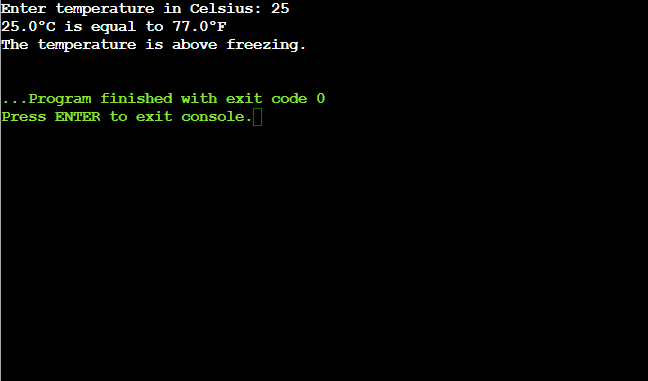
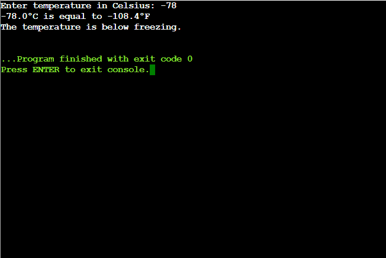
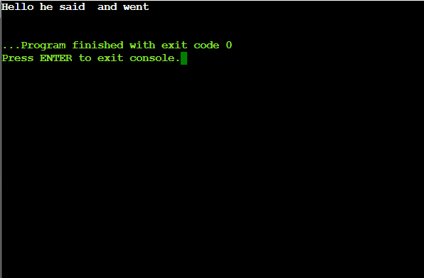
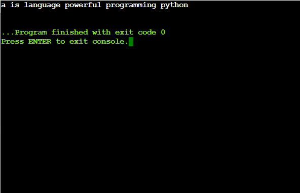
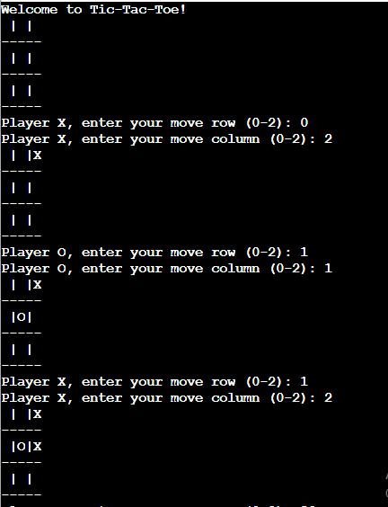
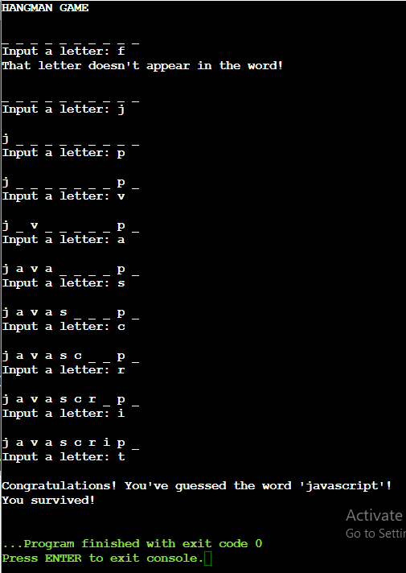
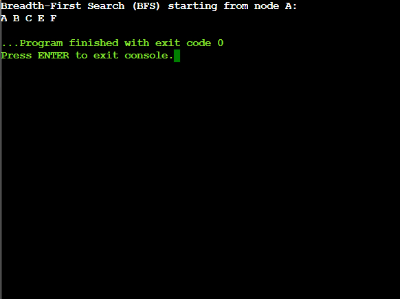
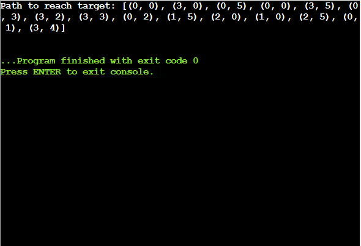

Prolog (Programming in Logic) is a declarative programming language primarily used in artificial intelligence and computational linguistics. It is based on formal logic and focuses on defining relationships and solving problems through logical inference.
Definition: Basic assertions or pieces of information about the world.
Example: `likes(ram, mango).` This fact asserts that Ram likes mango.
Definition: Define relationships between facts and describe how new facts can be inferred from existing ones.
Example: `loves_fruit(X) :- likes(X, mango).` This rule states that if a person likes mango, then they love fruit.
Definition: Questions posed to the Prolog system to derive answers based on the facts and rules defined.
Example: `?- likes(ram, mango).` This query checks if Ram likes mango.
Facts are the simplest elements in Prolog. They represent basic truths or assertions about entities. Facts are written in the form of `predicate(argument1, argument2, ..., argumentN).`
Rules in Prolog are used to infer new information based on existing facts. They are written in the form:
rule_name(Condition) :- Condition_1, Condition_2, ..., Condition_N.The `:-` symbol means "if" and `Condition_1, Condition_2, ..., Condition_N` are the conditions that must be met for the rule to be true.
Queries are used to retrieve information or check the validity of facts and rules. They are written in the form:
?- predicate(argument1, argument2, ..., argumentN).Prolog tries to satisfy the query by searching through the facts and rules defined.
% Facts
likes(ram, mango).
% Rules
loves_fruit(X) :- likes(X, mango).
% Queries
?- likes(ram, mango).
In Prolog, you can define predicates to perform specific tasks or checks. Here, we will explore two predicates related to temperature:
Definition: A predicate that converts a temperature from Centigrade to Fahrenheit.
Formula: F = C * 9/5 + 32
Example: Converting 25°C to Fahrenheit yields 77°F.
Definition: A predicate that checks if a given temperature is below the freezing point of water (0°C).
Example: Checking if 5°C is below freezing returns false, while -5°C returns true.
This predicate takes a temperature in Centigrade and converts it to Fahrenheit using the specified formula.
This predicate determines whether the given temperature is below the freezing point.
def centigrade_to_fahrenheit(celsius):
"""Convert Celsius to Fahrenheit."""
fahrenheit = celsius * 9 / 5 + 32
return fahrenheit
def is_below_freezing(celsius):
"""Check if the temperature in Celsius is below freezing."""
return celsius < 0
# Get temperature input from the user
celsius_temp = float(input("Enter temperature in Celsius: "))
# Convert Celsius to Fahrenheit
fahrenheit_temp = centigrade_to_fahrenheit(celsius_temp)
# Print the conversion result
print(f'{celsius_temp}°C is equal to {fahrenheit_temp}°F')
# Check if the temperature is below freezing
if is_below_freezing(celsius_temp):
print("The temperature is below freezing.")
else:
print("The temperature is above freezing.")


Removing punctuation is often necessary when processing text data. This can be useful for tasks such as text normalization, data cleaning, or natural language processing (NLP) tasks.
Definition: Python provides a built-in string library that contains useful constants such as string.punctuation which holds all punctuation characters.
Example: The string.punctuation contains characters like !"#$%&'()*+,-./:;<=>?@[\]^_`{|}~.
Definition: A translation table maps characters in a string to their replacements. You can use this to efficiently remove punctuation.
Example: The method str.translate() uses a translation table to replace or remove characters from a string.
Removing punctuation is useful in text preprocessing steps in machine learning pipelines and NLP applications like sentiment analysis or text classification.
# Import the string library to get the punctuation characters
import string
# Define a function to remove punctuations from a given string
def remove_punctuations(input_string):
# Define a translation table to remove punctuation
translator = str.maketrans('', '', string.punctuation)
# Use the translate method to remove punctuation
return input_string.translate(translator)
# Example usage
input_string = "Hello!!!, he said -- and went."
no_punctuation_string = remove_punctuations(input_string)
print(no_punctuation_string)

Sorting words in a sentence alphabetically is a common task in text processing. It involves splitting the sentence into individual words, sorting them, and joining them back into a coherent sentence.
Definition: You can split a sentence into words using Python's split() method. It breaks the string at spaces by default.
Example: The sentence "Python is powerful" will be split into ['Python', 'is', 'powerful'].
Definition: You can sort the list of words using the sorted() function, which arranges the words in alphabetical order.
Example: The list ['Python', 'is', 'powerful'] will be sorted to ['Python', 'is', 'powerful'].
This functionality is useful for text manipulation tasks like word frequency analysis or improving readability of scrambled sentences.
# Define a function to sort the sentence alphabetically
def sort_sentence_alphabetically(sentence):
# Split the sentence into words
words = sentence.split()
# Sort the words alphabetically
sorted_words = sorted(words)
# Join the sorted words back into a sentence
sorted_sentence = ' '.join(sorted_words)
return sorted_sentence
# Example usage
example_sentence = "python is a powerful programming language"
sorted_sentence = sort_sentence_alphabetically(example_sentence)
print(sorted_sentence)

Tic-Tac-Toe is a two-player game where players alternate marking X and O on a 3x3 grid. The objective is to be the first to get three of your marks in a row, column, or diagonal.
Definition: The game board can be represented using a 2D list in Python. This grid is filled with empty strings initially, and updated as players make their moves.
Definition: The win conditions can be checked by examining the rows, columns, and diagonals to see if they contain the same symbol (X or O).
# Define a function to print the board
def print_board(board):
for row in board:
print("|".join(row))
print("-" * 5)
# Define a function to check if there's a win
def check_win(board, player):
win_conditions = [
[board[0][0], board[0][1], board[0][2]],
[board[1][0], board[1][1], board[1][2]],
[board[2][0], board[2][1], board[2][2]],
[board[0][0], board[1][0], board[2][0]],
[board[0][1], board[1][1], board[2][1]],
[board[0][2], board[1][2], board[2][2]],
[board[0][0], board[1][1], board[2][2]],
[board[0][2], board[1][1], board[2][0]],
]
return [player, player, player] in win_conditions
# Define a function for player moves
def player_move(board, player):
while True:
row = int(input(f"Player {player}, enter your move row (0-2): "))
col = int(input(f"Player {player}, enter your move column (0-2): "))
if board[row][col] == " ":
board[row][col] = player
break
else:
print("This position is already taken. Please choose another.")
# Define the game loop
def play_game():
board = [[" " for _ in range(3)] for _ in range(3)]
player = "X"
print("Welcome to Tic-Tac-Toe!")
for _ in range(9):
print_board(board)
player_move(board, player)
if check_win(board, player):
print_board(board)
print(f"Player {player} wins!")
return
player = "O" if player == "X" else "X"
print_board(board)
print("It's a draw!")
# Start the game
play_game()

Hangman is a classic word-guessing game where players guess letters to try and figure out the hidden word before running out of attempts. Each wrong guess reduces the number of remaining attempts.
Definition: A random word is selected from a predefined list using Python's random.choice() function.
Definition: The player inputs their guesses, and the game checks whether the letter is in the word. Correct guesses reveal the letter's position in the word, while wrong guesses decrease the remaining attempts.
import random
# List of words to choose from
words = ['python', 'java', 'kotlin', 'javascript']
# Randomly select a word from the list
word = random.choice(words)
# Create a list to represent the guessed word
guessed_word = ['_' for _ in word]
# Number of attempts allowed
attempts = 8
# Set to track guessed letters
guessed_letters = set()
print("HANGMAN GAME")
# Game loop
while attempts > 0:
print("\n" + ' '.join(guessed_word))
# Get player's guess
guess = input("Input a letter: ").lower()
# Check if the letter was already guessed
if guess in guessed_letters:
print("No improvements. You've already guessed this letter.")
else:
guessed_letters.add(guess)
# Check if the guessed letter is in the word
if guess in word:
for i in range(len(word)):
if word[i] == guess:
guessed_word[i] = guess
else:
print(f"That letter doesn't appear in the word!")
attempts -= 1
# Check if the player has guessed the whole word
if ''.join(guessed_word) == word:
print(f"\nCongratulations! You've guessed the word '{word}'!")
print("You survived!")
break
# If attempts run out, print the losing message
if attempts == 0:
print(f"\nYou lost! The word was '{word}'. Better luck next time.")

BFS is an algorithm for traversing or searching tree or graph data structures. It starts from a selected node, explores all the neighboring nodes at the present depth, before moving on to nodes at the next depth level.
Definition: BFS uses a queue to keep track of the nodes to visit. A queue follows the First-In-First-Out (FIFO) principle, meaning that the first element added will be the first to be processed.
Definition: The algorithm keeps a list of visited nodes to ensure that each node is processed only once and to avoid cycles in graphs.
# Breadth-First Search (BFS) algorithm in Python
# Sample graph using an adjacency list
graph = {
'A': ['B', 'C'],
'B': ['C', 'E'],
'C': ['F'],
'D': [],
'E': ['F'],
'F': []
}
visited = [] # List to keep track of visited nodes.
queue = [] # Initialize a queue
# Function to perform BFS
def bfs(visited, graph, node):
visited.append(node)
queue.append(node)
while queue: # Create a loop to visit each node
current_node = queue.pop(0)
print(current_node, end=" ")
# Get all adjacent nodes of the current node
for neighbor in graph[current_node]:
if neighbor not in visited:
visited.append(neighbor)
queue.append(neighbor)
# Driver code
print("Breadth-First Search (BFS) starting from node A:")
bfs(visited, graph, 'A')

The Water Jug Problem involves two jugs with given capacities, and the goal is to measure a specific amount of water using these jugs. You can perform the following operations:
Given a target amount of water, you need to determine if it is possible to measure that amount using the two jugs and return the number of steps taken to reach the desired quantity.
Definition: Each state of the problem can be represented as a tuple containing the amount of water in both jugs.
Definition: BFS is used to explore all possible states (water levels in the jugs) to find the shortest path to the target amount of water.
from collections import deque
def water_jug_problem(m, n, target):
# Helper function to compute the greatest common divisor
def gcd(a, b):
while b:
a, b = b, a % b
return a
# Check if the target is achievable
if target > max(m, n) or target % gcd(m, n) != 0:
return "Solution not possible"
visited = set() # To keep track of visited states
queue = deque([(0, 0)]) # Initialize with both jugs being empty
path = [] # To store the path taken
while queue:
jug1, jug2 = queue.popleft()
path.append((jug1, jug2))
# Check if the target is reached
if jug1 == target or jug2 == target:
return path # Return the path if the target is found
# Possible operations
states = [
(m, jug2), # Fill jug1
(jug1, n), # Fill jug2
(0, jug2), # Empty jug1
(jug1, 0), # Empty jug2
(jug1 - min(jug1, n - jug2), jug2 + min(jug1, n - jug2)), # Pour jug1 to jug2
(jug1 + min(jug2, m - jug1), jug2 - min(jug2, m - jug1)) # Pour jug2 to jug1
]
for state in states:
if state not in visited:
visited.add(state)
queue.append(state)
return "Solution not possible"
# Example usage
m, n, target = 3, 5, 4
result = water_jug_problem(m, n, target)
if isinstance(result, list):
print("Path to reach target:", result)
else:
print(result)

Stop words are common words that are usually filtered out before processing text. Removing stop words from a text can help in focusing on the more meaningful words and improving the efficiency of text analysis tasks.
Definition: Tokenization is the process of splitting text into individual words or tokens.
Definition: Stop words are commonly used words that are typically removed in text processing tasks because they do not contribute much to the meaning of the text.
pip install nltk
import nltk
nltk.download('punkt')
nltk.download('stopwords')
import nltk
from nltk.corpus import stopwords
from nltk.tokenize import word_tokenize
import os
# Make sure to download the stopwords set if you haven't already
nltk.download('punkt')
nltk.download('stopwords')
def remove_stop_words(file_path):
if not os.path.isfile(file_path):
raise FileNotFoundError(f"The file {file_path} does not exist.")
# Read text from the file
with open(file_path, 'r', encoding='utf-8') as file:
text = file.read()
# Tokenize the text into words
words = word_tokenize(text)
# Get the set of English stop words
stop_words = set(stopwords.words('english'))
# Remove stop words from the tokenized words
filtered_text = [word for word in words if word.lower() not in stop_words]
# Join words back to form the string without stop words
filtered_text = ' '.join(filtered_text)
return filtered_text
# Example usage
file_path = 'path/to/your/text_file.txt' # Replace with your text file path
try:
processed_text = remove_stop_words(file_path)
print(processed_text)
except Exception as e:
print(f"An error occurred: {e}")
Stemming is a text normalization process that reduces words to their root or base form. For example, the words "running," "runner," and "runs" may all be reduced to "run." This process helps in text analysis by reducing the complexity of the text data.
Definition: Tokenization involves splitting text into individual words or tokens.
Definition: Stemming is the process of removing prefixes or suffixes from words to obtain their root form. NLTK provides stemmers like the Porter Stemmer to perform this task.
pip install nltk
import nltk
nltk.download('punkt')
import nltk
from nltk.stem import PorterStemmer
from nltk.tokenize import word_tokenize
# Make sure to download the punkt tokenizer module if you haven't already
nltk.download('punkt')
def stem_sentence(sentence):
# Tokenize the sentence into words
words = word_tokenize(sentence)
# Create a Porter Stemmer object
stemmer = PorterStemmer()
# Stem each word in the sentence
stemmed_words = [stemmer.stem(word) for word in words]
# Join the stemmed words back into a string
stemmed_sentence = ' '.join(stemmed_words)
return stemmed_sentence
# Example usage
sentence = "The running runner runs quickly"
stemmed_sentence = stem_sentence(sentence)
print("Original Sentence:", sentence)
print("Stemmed Sentence:", stemmed_sentence)